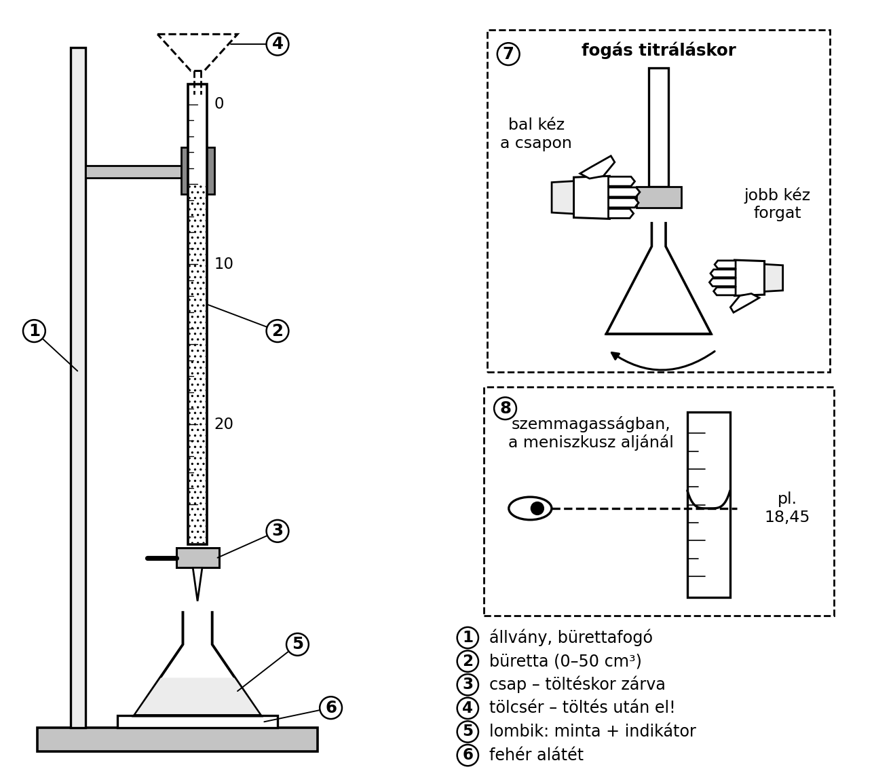

A pék dolga a liszt, a kovász, a víz és a késztermék minőségének ellenőrzése. A kovász savállapotát nem elég csak szagról vagy ízből becsülni: a kovász érleltsége, a savfok és a savfokváltozás olyan fontos jellemző, amelyet laboratóriumi módszerrel számszerűen is meg lehet határozni. A pékek gyakran találkoznak a savfok kifejezéssel a kovászérésnél és a rozskenyér készítésénél, de a mögötte álló mérési technika a térfogatos elemzés, közkeletű nevén titrálás. Ez az alfejezet azt mutatja meg, hogyan dolgozunk mérőoldattal, mire való az indikátor, és miért kell párhuzamos méréseket végezni.
Képzeljük el, hogy ismeretlen ecetben szeretnénk megtudni a savtartalmat. Ha van egy ismert erősségű lúgoldatunk, például nátrium-hidroxid-oldatunk, akkor lassan, keverés közben adagoljuk az ecethez. A lúg semlegesíti az ecetsavat. Ha ehhez a keverékhez egy olyan anyagot adunk, amely a savas közegben színtelen, de a feleslegesen hozzáadott lúg hatására rózsaszínű lesz, akkor pontosan láthatjuk, mikor fogyott el a sav. Ezt az anyagot indikátornak nevezzük. A titrálás kulcsa tehát az: mérjük meg, mennyi mérőoldat fogyott a minta meghatározott összetevőjéhez, és ebből számítsuk ki a kérdéses anyag mennyiségét.
Definíció. A titrálás (térfogatos elemzés) olyan mennyiségi kémiai meghatározás, amelyben a vizsgálandó anyag oldatához ismert koncentrációjú, ismert reagensoldatot – mérőoldatot – adagolunk, amíg a reakció teljesen lejátszódik. A reakció befejeződésének pontját végpontnak nevezzük, amelyet legtöbbször indikátor színváltozása jelez.
Definíció. A mérőoldat olyan oldat, amelynek a hatóanyag-koncentrációja pontosan ismert, vagy azzal összevethető javított értékkel, a faktorral számolunk. A mérőoldat neve a benne oldott hatóanyagra utal, például „nátrium-hidroxid mérőoldat, névleges koncentráció 0,1 mol/l, faktor 1,003”.
Definíció. A faktor azt mutatja meg, hogy a tényleges koncentráció hányszorosa a névlegesnek. Ha például a mérőoldat névleges koncentrációja 0,1 mol/l, és a faktor 0,985, akkor a tényleges koncentráció . A faktor tehát korrekciós szorzó, amelyet a mérési eredmény kiszámításakor figyelembe kell venni.
Definíció. A sav-lúg titrálás olyan térfogatos elemzés, amelyben a minta savtartalmát lúgoldat, vagy a lúgosságot savoldat méri, közömbösítési reakcióval. A sütőiparban az egyik leggyakoribb alkalmazás a savfok meghatározása, amely a kovász, a liszt vagy a sütőipari késztermék savasságát jellemzi.
Definíció. A végpont a titrálás azon pontja, ahol az indikátor színe megváltozik. A párhuzamos mérés ugyanabból a mintából, azonos körülmények között végzett ismételt titrálás. A párhuzamos mérésekből átlagot és eltérést számolunk, mert így ki tudjuk szűrni a véletlen hibákat és a kirívó, hibás eredményeket.
Egyetlen titrálás mindig tartalmazhat apró hibát: a büretta leolvasása pontatlan, a csepp hozzáadása túl gyors, a lombik kiöblítése nem tökéletes. Ha több mérést végzünk, az eredmények közötti eltérés megmutatja a mérés megbízhatóságát. A párhuzamos mérések átlagát akkor fogadjuk el, ha az egyes mérések fogyásai közel esnek egymáshoz, például legfeljebb a középérték néhány tized százalékán belül térnek el. Ha egy mérés kiugrik a többi közül, azt a mérést meg kell ismételni.
Definíció. Az indikátor olyan anyag, amely színét a közeg kémhatásának megváltozásával hirtelen megváltoztatja. A sav-lúg titrálásnál leggyakrabban fenolftaleint használnak, amely savas oldatban színtelen, lúgos oldatban pedig rózsaszínű.
A fenolftalein színátcsapása nem a tiszta víz semleges pontjánál következik be, hanem enyhén lúgos tartományban, nagyjából pH 8,2–10 között (ellenőrizendő: a használt indikátor gyártói adatlapja, MSZ EN ISO és a laboratóriumi gyakorlat szerint). A kovász és a liszt savai (tejsav, ecetsav) gyenge savak; lúggal titrálva a közömbösítés pontja enyhén lúgos tartományba esik, ezért olyan indikátor kell, amely pH 8–10 között vált: ez a fenolftalein. Az első maradandó halvány rózsaszín már egyetlen csepp lúgfelesleget jelez, ezért a fogyás gyakorlatilag a közömbösítéshez szükséges mennyiség. A mérés során a színtelen oldatot addig adagoljuk, amíg a minta halvány rózsaszínű lesz, és a szín keverés után legalább 15–30 másodpercig megmarad.
Figyelem. Túl sok lúg hozzáadása esetén a szín erős bíborvörösre (mélyrózsaszínre) vált, a minta túltitrált, és a mérés értékelhetetlenné válik. A titrálásnál a végpontot nem a sötét szín, hanem az első maradandó halvány szín jelenti.
Hogy miért éppen a fenolftalein illik a gyenge savak (például a tejsav vagy az ecetsav) titrálásához, azt a titrálási görbe mutatja meg. Az alábbi ábra egy szemléltető modellen ábrázolja a pH változását 20,0 ml 0,1 mol/l ecetsav és összevetésként sósav titrálásakor: az egyenértékpontnál a görbe hirtelen megugrik, és gyenge savnál ez az ugrás a lúgos tartományba, a fenolftalein szürke átcsapási sávjába esik.
A görbe meredek szakaszán egyetlen csepp lúg is több pH-egységnyi változást okoz, ezért a végpont közelében cseppenként kell adagolni. A HTML-kiadásban a hozzáadott térfogatot csúszkával növelve a lombik színe az aktuális pH szerint változik, és a büretta leolvasása is megjelenik.
A sütőipari laboratóriumban a sav-lúg titráláshoz általában az alábbi eszközöket használják:
Az eszközök összeállítását az alábbi ábra mutatja: a bürettát (2) függőlegesen fogja a bürettafogó (1); a csap (3) töltéskor zárva van; a töltőtölcsért (4) töltés után le kell venni, mert róla cseppek hullhatnak a bürettába, és meghamisítják a leolvasást; az Erlenmeyer-lombik (5) fehér alátéten (6) áll, hogy a halvány színváltozás jól látsszon. A betétképek a kezelési fogást (7) és a leolvasást (8) mutatják.

Titrálás közben a bal kéz a csapot kezeli, a jobb kéz folyamatosan, körkörösen forgatja a lombikot, hogy a becseppenő mérőoldat azonnal elkeveredjen; a fogyást mindig szemmagasságban, a meniszkusz aljánál olvasd le, két tizedesjegy pontossággal.
A tanuló végezzen el egy egyszerű sav-lúg titrálást mérőoldat fogyásának meghatározására, és számoljon párhuzamos mérésekből átlagot, majd értékelje az eltérést.
A mérési eredményeket mindig táblázatban rögzítjük. A büretta leolvasását 0,05 ml pontossággal (két tizedesjegy, a második 0 vagy 5) adjuk meg, például 21,85 ml, 21,95 ml, 22,05 ml. Az átlagot úgy számítjuk, hogy a mérési értékeket összeadjuk, és elosztjuk a mérések számával:
A gyakorlatban akkor fogadjuk el a párhuzamos méréseket, ha az eltérés a legkisebb és a legnagyobb fogyás között például nem haladja meg a 0,1 ml-t. Ez az érték tanulási példa, nem szabvány; a tényleges elfogadási határt a vizsgálati módszer és a laboratóriumi utasítás adja meg (ellenőrizendő: a laboratóriumi munkahelyi utasítás, a módszerszabvány).
Adott: Három párhuzamos titrálás fogyása:
Keresett: Az átlagos fogyás .
Képlet:
Behelyettesítés:
Eredmény: Az átlagos fogyás 21,95 ml.
Ellenőrzés: A három érték közül a legkisebb és a legnagyobb közötti eltérés , ami meghaladja a tanulási példában javasolt 0,1 ml-es határt. Ezért ezt a sorozatot újra kell mérni.
Adott: Újabb három fogyás:
Keresett: Átlag, eltérés, és annak eldöntése, hogy a harmadik mérés kiugró-e.
Számítás:
Értékelés: A harmadik mérés kiugró, mert lényegesen eltér a másik kettőtől. Az első két mérés átlaga:
Eredmény: A kiugró mérést dokumentáljuk, nem számítjuk be, és helyette új párhuzamos mérést végzünk. A megmaradt két mérés eltérése 0,10 ml (a tanulási határon belül), átlaguk 21,95 ml; ez az új párhuzamos mérés megerősítése után adható meg eredményként.
Megjegyzés. Egységes szabály: a kiugró mérést dokumentáljuk, nem számítjuk be, és helyette új párhuzamos mérést végzünk; az eredményt a megfelelő párhuzamosokból adjuk meg.
A savfok meghatározásánál a mérőoldat tényleges koncentrációját a faktorral vesszük figyelembe. Tegyük fel, hogy az elvégzett savfok-meghatározás képlete a következő szemléltető alakú (a valódi módszer a minőségvizsgálati fejezetben szerepel, és a forrását ott ellenőrizni kell). Ez a képlet a könyvben egységesen használt savfokot adja: az mmol NaOH / 100 g minta számértéke egyenlő a 100 g mintára fogyott 1 mol/l-es NaOH cm³-ével (= 10 g mintára fogyott 0,1 mol/l-es NaOH cm³-ével). A skálát mindig meg kell adni; más skálán a szám tízszeres lehet (ellenőrizendő: módszerszabvány):
ahol:
Adott: , , , .
Keresett: A savfok szemléltető értéke.
Behelyettesítés:
Ellenőrzés: A 3,15-ös érték a búzaliszt tanulási irányértékén (2–4) belül van, az egységek és a nagyságrend összhangban vannak a sütőipari savfok-méréseknél várható értékekkel (ellenőrizendő: a konkrét módszer és a hatályos Élelmiszerkönyv-előírás).
A savfok meghatározásához általában a vizsgálandó liszt, kovász vagy késztermék vizes kivonatát készítik el. A mintát vízzel elkeverik, majd szűrik, és a szűrletből történik a titrálás. A pontos módszert a minőségvizsgálati fejezet, a Magyar Élelmiszerkönyv és a vonatkozó gabonavizsgálati szabványok tartalmazzák (ellenőrizendő: a módszer és az előírásszám). A pékek számára az a fontos, hogy a mérést mindig ugyanazzal a módszerrel, ugyanazon hőmérsékleten, és ugyanolyan előkészítéssel végezzék.
A párhuzamos mérések jegyzőkönyvében az alábbi adatokat kell rögzíteni:
A laboratóriumi jegyzőkönyvben a fogyásokat mindig 0,05 ml pontossággal (két tizedesjegy) tüntetjük fel. A jegyzőkönyvben a számított savfok értékét a módszer által megadott egységben kell megadni, például „mmol/100 g” vagy a módszerben használt egyéb mértékegységben.
A titrálás minőségi jellemzői:
A mérés akkor tekinthető megbízhatónak, ha legalább két párhuzamos mérés megismételhető, és a fogyás eltérése a módszerben elfogadott tűrésen belül marad.
Hiba: A bürettát nem öblítik át mérőoldattal, csak vízzel. Következmény: Az első mérésnél a mérőoldat hígul, ami pontatlan fogyást ad. Megoldás: A bürettát mindig öblítsük át a mérőoldatból 5–10 ml-rel, és ezt a felesleget ne használjuk fel a méréshez.
Hiba: A titrálást túl gyorsan, nagy cseppekben végzik. Következmény: A végpontot elvétik, a szín sötét rózsaszín lesz, és a mérés hamis. Megoldás: A végpont előtt már csak cseppenként adagoljuk a mérőoldatot.
Hiba: A párhuzamos méréseket különböző hőmérsékletű mintából végzik. Következmény: A hőmérséklet-különbség megváltoztatja a fogyást. Megoldás: A mintákat a módszer szerinti hőmérsékletre temperáljuk, és a mérést lehetőleg azonos körülmények között végezzük.
Hiba: A kiugró mérést elfogadják az átlag számításánál. Következmény: Az eredmény hibás, a savfok rossz lesz, és a kovászminőség értékelése téves. Megoldás: A kiugró mérést jelöljük, ismételjük, és csak a megbízható párhuzamosokból számoljunk átlagot.
1. feladat (A)
Fogalmazd meg, mi a titrálás, és mi a mérőoldat szerepe.
2. feladat (A)
Három párhuzamos mérés fogyása: 24,80 ml, 24,90 ml, 24,85 ml. Számítsd
ki az átlagot és az eltérést.
3. feladat (B)
Egy mérőoldat névleges koncentrációja 0,05 mol/l, faktor 1,02. Számítsd
ki a tényleges koncentrációt.
4. feladat (B)
Egy savfok-meghatározáshoz a fogyás 2,45 ml, a faktor 0,980, a névleges
koncentráció 0,100 mol/l, a bemért minta 5,0 g. Számítsd ki a savfokot a
szemléltető képlet alapján, mmol/100 g-ban.
5. feladat (C)
Miért ad nagyobb savfokot a végpont túllépése? Mennyivel nő a 4. feladat
eredménye, ha 0,20 ml-rel túltitrálunk?
6. feladat (D)
A gyakorlati útmutató szerint végezz három párhuzamos titrálást a
laboratóriumban. Vedd fel a büretta leolvasásokat, számold ki a
fogyásokat, az átlagot és az eltérést. Ellenőrizd, hogy van-e kiugró
érték. Dokumentáld a jegyzőkönyvben a mérőoldat faktorát, a minta
térfogatát és az indikátort.
A titrálás térfogatos elemzés, amelyben a vizsgálandó oldathoz ismert koncentrációjú mérőoldatot adagolunk a reakció teljes lejátszódásáig. A mérőoldat szerepe, hogy pontosan ismert mennyiségű reagenst biztosítson a minta összetevőjének meghatározásához.
Adott: , , .
Átlag:
Eltérés a legkisebb és legnagyobb között: . Ez a tanulási példában elfogadható.
Adott: , .
Képlet:
Behelyettesítés:
Eredmény: 0,051 mol/l.
Adott: , , , .
Képlet (szemléltető):
Behelyettesítés:
Ellenőrzés: A fogyás és a minta tömege alapján a kapott érték nagyságrendben reális.
A végpont túllépése nem veszélyes, de hamis (nagyobb) fogyást ad, ezért a számított savfok is nagyobb lesz. A 4. feladat 2,45 ml-es fogyása helyett 2,65 ml-lel számolva:
vagyis kb. -mal nagyobb a helyes -nál. A színre titrálásnál a cél az első maradandó halvány rózsaszín; ezért a végpont közelében cseppenként adagolunk. A fenolftalein-oldat kezelésére a gyakorlati útmutató biztonsági pontja vonatkozik.
Mintajegyzőkönyv (0,1 mol/l NaOH mérőoldat, faktor 0,980; minta: 20,0 ml hígított ecetsav; indikátor: fenolftalein, 2–3 csepp):
| Mérés | Kezdő (ml) | Vég (ml) | Fogyás (ml) |
|---|---|---|---|
| 1. | 0,20 | 20,15 | 19,95 |
| 2. | 20,15 | 40,05 | 19,90 |
| 3. | 0,10 | 20,10 | 20,00 |
Az átlag: . A legnagyobb és legkisebb fogyás különbsége , ami nem haladja meg a tanulási határt (0,1 ml; ellenőrizendő: a módszerszabvány és az üzemi utasítás), tehát elfogadható. Kiugró mérés esetén azt dokumentáljuk, nem számítjuk be, és új párhuzamos mérést végzünk. A jegyzőkönyvben szerepelnie kell a mérőoldat faktorának, a minta térfogatának, az indikátor nevének, a mérés idejének és a mérést végző aláírásának.
A titrálás térfogatos elemzés, amelyben ismert koncentrációjú mérőoldatot adagolunk a vizsgálandó mintához a reakció végpontjáig. A sav-lúg titrálásnál közömbösítési reakció játszódik le, és a végpontot fenolftalein indikátor színváltása jelzi. A mérőoldat koncentrációját a faktorral korrigáljuk. A párhuzamos mérésekből átlagot és eltérést számolunk, a kiugró mérést kizárjuk és megismételjük. A savfok-meghatározás előkészítése során a liszt vagy kovász vizes kivonatát készítik el, majd a szűrletet titrálják; a pontos módszer a minőségvizsgálati fejezetben és az Élelmiszerkönyvben szerepel (ellenőrizendő). A titrálást mindig óvatosan, cseppenként végezzük, és a mérési adatokat jegyzőkönyvben rögzítjük. A párhuzamos mérés és a faktor használata az élelmiszer-minőségvizsgálat alapvető eleme.